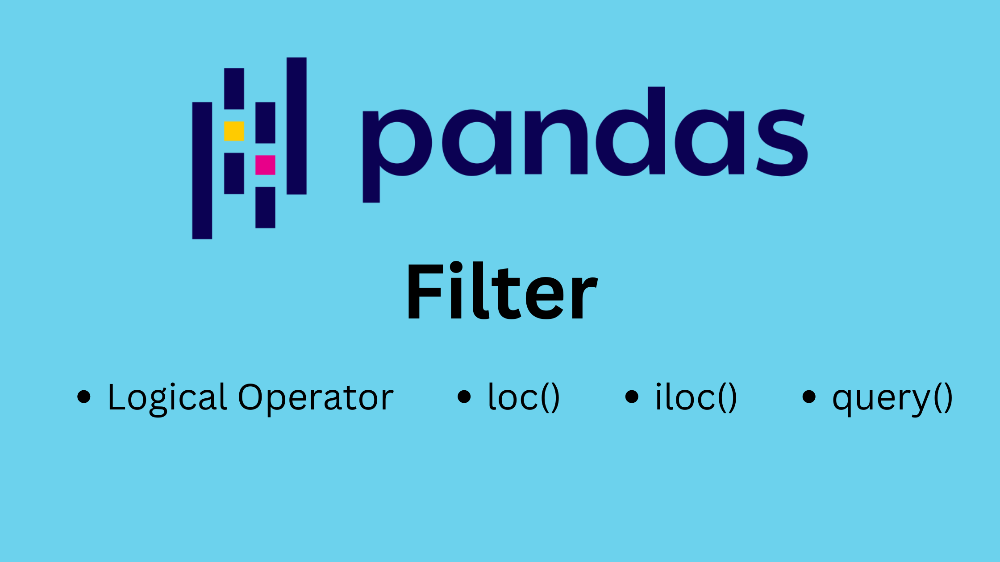

Pandu Mulya Muhammad Syah

Beberapa cara yang digunakan dalam memfilter data menggunakan Pandas.
Mengolah data menggunakan Pandas: membaca data, menambah kolom dan menyimpan ke dalam file baru.
Dasar-dasar library Pandas yang perlu diketahui.
Membuat Pandas Dataframe
Beberapa environtmen umum yang digunakan programmer untuk membuat dan mengembangkan program Python
Beberapa alasan kenapa Bahasa Pemrograman Pyhon layak untuk dipelajari
Alasan menggunakan Linux sebagai Daily Driver